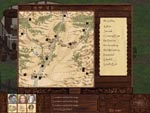
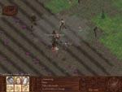

Catch a Thief
| Max 2 Skill Points, NPC Mirilich |
Background/Summary
Tinema accuses Mirilich of stealing.
Player's Introduction
Speak with Tinema.
Objectives
Save Mirilich.
Completing Objectives
1) Speak with Tinema about Mirilich
|
2) Visit the Land's End Caverns that Tinema marks off on the party's Valley map. It is just north of Lond's House.
|

|
3) If the party has someone with nature skill they will be able to find Mirilich by walking around long enough. The higher the nature skill that the party has, the quicker they will find him.
4) Once the party finds Mirilich, there are 2 options.
|
4.1.1) If they leader has charisma of at least 15 and speech of at least 21 Mirilich will explain what happened to him. Once he is done, invite him to join.
|
|
4.1.2) When the party leaves the cave they will be attacked by the Red Caps. After the party has defeated the Red Caps they can return to Tinema's House. Tinema will want to kill Mirilich. If the party protects Mirilich he will stay in the party and they will have to defeat Transformed Tinema in combat +2SP
|

|
|
4.2.1) Initiate and defeat Mirilich in combat
|
|
4.2.2) Return to Tinema with news of his death +2SP
|
|